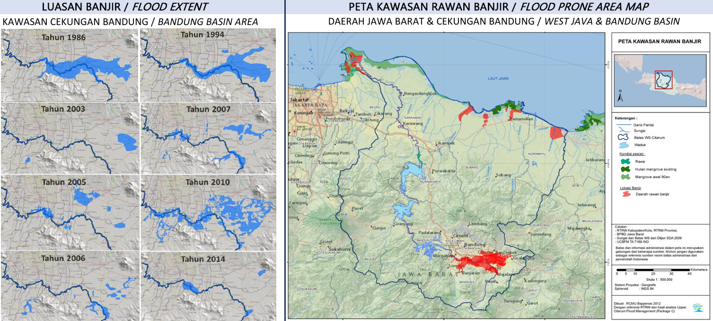
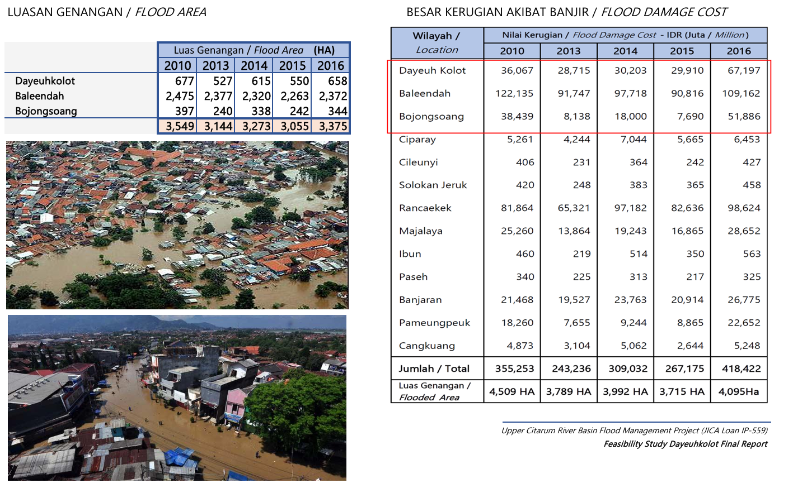

1. BANJIR CEKUNGAN BANDUNG
Banjir di wilayah Cekungan Bandung sudah terjadi sejak awal abad ke-19, mulai dari Kecamatan Rancaekek, Majalaya, Baleendah, Dayeuhkolot, Bojongsoang hingga Kecamatan Banjaran. Curah hujan yang cukup tinggi membuat sungai Citarum meluap dan membanjiri kawasan tersebut. Tercatat kronologis banjir di Kawasan Bandung Selatan terjadi pada tahun1931, 1983, 1984, 1985, 1986, 1992, 1993, 2002, hingga saat ini banjir terus melanda setiap tahunnya.
2. PETA KEJADIAN BANJIR & KAWASAN RAWAN BANJIR
3. Besaran Banjir
4. Proyek Pengendalian Banjir Das Citarum Hulu
Kementerian PUPR di tahun 2016-2020 telah melaksanakan proyek Pengendalian Banjir DAS Citarum Hulu yang meliputi:
- Check dam
- Embung Gedebage
- Kolam Retensi Cieunteung
- Terowongan Nanjung
- Floodway Cisangkuy
- Polder Andir (tahap konstruksi)
5. Pengaruh perubahan Iklim terhadap Basis Desain
Perubahan iklim akibat pemanasan global berpengaruh pada pola curah hujan sehingga mengakibatkan pergeseran puncak banjir, di samping itu pengembangan kawasan yang mengubah tata guna lahan juga berdampak atas besaran rencana. Beberapa kajian yang dilakukan untuk daerah daerah di pulau Jawa menunjukkan pergeseran puncak banjir dari perioda ulang 25 tahunan menjadi 50 tahunan.
Perubahan ini berakibat masih timbulnya banjir belakangan ini meskipun upaya struktural di atas telah dilakukan. Bahwasanya dasar perencanaan (desain) infrastruktur pengendali banjir yang digunakan selama ini berdasarkan (curah) hujan rencana dan debit banjir rencana dengan perioda ulang 20 tahunan. Merujuk kondisi di atas, mendorong perlunya ada solusi pelengkap / komplemen dari upaya struktural yang telah dilakukan dan yang direncanakan dalam Rencana Pengelolaan Sumber Daya Air Wilayah Sungai Citarum - untuk menanggulangi bencana banjir di wilayah cekungan Bandung. Solusi ini perlu mempertimbangkan pengaruh perubahan iklim terhadap besaran rencana - hujan rencana dan debit banjir rencana, yaitu menggunakan besaran rencana perioda ulang 50 tahunan
Besaran rencana ini sejalan dengan kriteria dalam Peraturan Presiden no. 2 tahun 2015 tentang Rencana Pembangunanan Jangka Menengah Nasional 2015 – 2019 dalam hal kriteria desain pengendalian banjir, sebagaimana dinyatakan dalam Buku I Lampiran Perpres tersebut, pada butir Sasaran Ketahanan Air – Peningkatan Kapasitas Desain Pengendalian Banjir yang semula 5 – 25 tahun menjadi 10 – 100 tahun
6. Usulan Solusi
Usulan solusi Prasarana Pengendali Banjir Bandung Selatan yang digagas bertujuan untuk melengkapi upaya struktural yang telah dilakukan pemerintah dengan memperhitungkan pengaruh perubahan iklim di atas, dan menggunakan kriteria perencanaan sebagaimana dituangkan dalam RPJMN 2015-2019 Sasaran Ketahanan Air - Ketangguhan masyarakat dalam mengurangi risiko daya rusak air. Studi yang telah dilakukan menggunakan kriteria hujan rencana dan debit banjir rencana dengan perioda ulang 50 tahunan, dengan usulan solusinya adalah membuat kolam retensi dan kanal banjir berawal dari titik pertemuan sungai Cikapundung dan Cisangkuy di sungai Citarum (sekitar Andir, Kabupaten Bandung) dan berakhir di sungai Ciwidey - menunjukkan adanya reduksi yang signifikan terhadap luasan genangan banjir. Dengan infrastruktur ini daerah seluas 2,410 HA yang semula banjir, dapat direduksi menjadi hanya 590 HA saja. Reduksi ini terbesar terjadi di daerah Baleendah, Dayeuhkolot dan Bojongsoang. Daerah Baleendah, Dayeuhkolot dan Bojongsoang merupakan daerah yang termasuk dalam kawasan Cekungan bandung. Wilayah Cekungan Bandung sangat strategis dan memiliki nilai ekonomis yang tinggi, dan ini ditunjukkan dengan terbitnya Perpres 45 tahun 2018 tentang Rencana Tata Ruang Kawasan Perkotaan Cekungan Bandung , yang bertujuan untuk mewujudkan kawasan perkotaan yang berkelas dunia sebagai pusat kebudayaan, pariwisata, serta kegiatan jasa dan ekonomi kreatif nasional, yang berbasis pendidikan tinggi dan industri berteknologi tinggi yang berdaya saing dan ramah lingkungan. Dengan terbebaskannya Bandung Selatan dari banjir, daerah tersebut dapat dikembangkan menjadi kawasan perkotaan sebagai bagian dari Pengembangan Kawasan Perkotaan Cekungan Bandung.